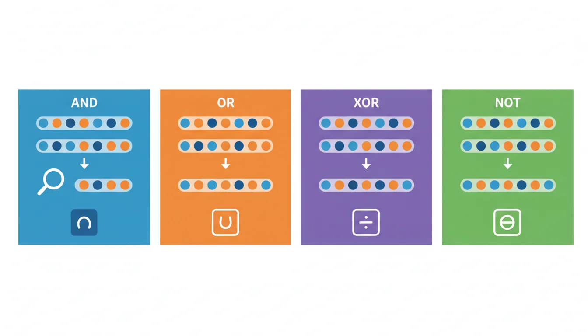
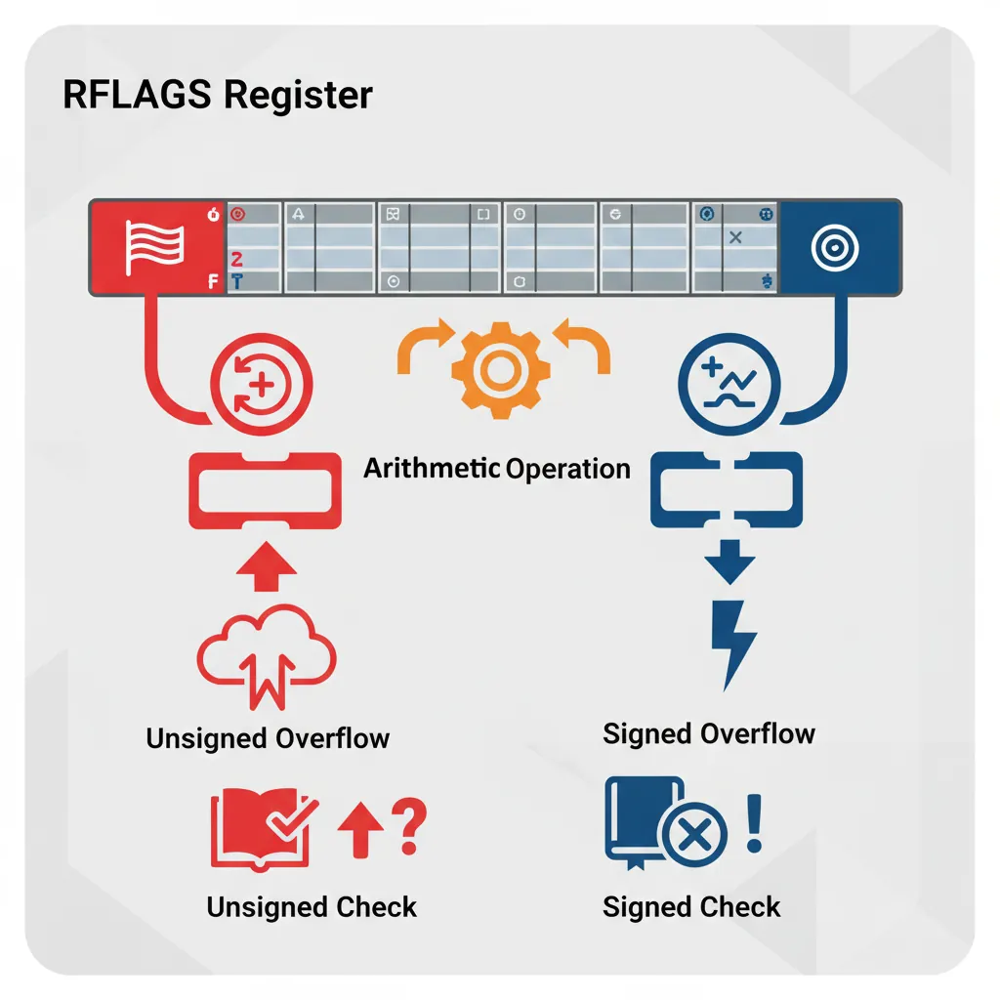

DIV divides the 128-bit value in RDX:RAX by the operand, storing the quotient in RAX and remainder in RDX
IDIV (Signed Division)
; Must sign-extend RAX into RDX:RAX first
mov rax, -100
cqo ; Sign-extend RAX into RDX:RAX
mov rbx, 7
idiv rbx ; RAX = -14, RDX = -2
Bitwise Operations
AND, OR, XOR, NOT
and rax, rbx ; RAX = RAX & RBX
or rax, rbx ; RAX = RAX | RBX
xor rax, rbx ; RAX = RAX ^ RBX
not rax ; RAX = ~RAX (one's complement)
; Common idioms
xor rax, rax ; Clear register (faster than mov rax, 0)
and rax, 0x0F ; Mask lower nibble
or rax, 0x80 ; Set bit 7

Bitwise operations process each bit independently — AND masks, OR sets, XOR toggles, and NOT inverts all bits
Common Bit Tricks
Operation
Code
Effect
Test if power of 2
test rax, rax-1 ; jz is_power_of_2 (needs LEA trick)
n & (n-1) == 0
Isolate lowest set bit
blsi rax, rbx or and rax, -rax
e.g., 0b10110 → 0b00010
Clear lowest set bit
blsr rax, rbx or and rax, rax-1
e.g., 0b10110 → 0b10100
Swap values (no temp)
xor a,b; xor b,a; xor a,b
XOR swap trick
Set nth bit
bts rax, n or or rax, (1 << n)
Set specific bit
Clear nth bit
btr rax, n
Clear specific bit
Toggle nth bit
btc rax, n or xor rax, (1 << n)
Flip specific bit
Count set bits
popcnt rax, rbx
Population count (needs CPU support)
Find first set bit
bsf rax, rbx
Bit scan forward (from LSB)
Find last set bit
bsr rax, rbx
Bit scan reverse (from MSB)
; Check if number is power of 2
is_power_of_two:
test rdi, rdi ; Check if zero
jz .not_power ; 0 is not a power of 2
lea rax, [rdi - 1] ; rax = n - 1
test rdi, rax ; n & (n-1)
jnz .not_power ; If non-zero, not power of 2
mov eax, 1 ; Is power of 2
ret
.not_power:
xor eax, eax
ret
; Count trailing zeros (position of lowest set bit)
count_trailing_zeros:
bsf rax, rdi ; Bit scan forward
jnz .found
mov eax, 64 ; If input was 0, return 64
.found:
ret
Exercise: Extract Bit Field
Extract bits 4-7 from a register (4-bit field):
; Extract bits 4-7 from RDI into RAX
extract_bits_4_7:
mov rax, rdi
shr rax, 4 ; Shift field to bit 0
and rax, 0x0F ; Mask to keep only 4 bits
ret
Shifts & Rotates
shl rax, 1 ; Shift left (multiply by 2)
shr rax, 1 ; Shift right logical (unsigned divide by 2)
sar rax, 1 ; Shift right arithmetic (signed divide by 2)
rol rax, 1 ; Rotate left
ror rax, 1 ; Rotate right
; Fast multiplication by power of 2
shl rax, 3 ; RAX = RAX * 8
Flags & Overflow Detection
Arithmetic operations set CPU flags that indicate result characteristics:

The RFLAGS register contains status flags set by arithmetic operations — CF and OF are critical for detecting unsigned and signed overflow
Flag
Name
Set When
Use For
ZF
Zero Flag
Result is zero
Equality checks, loop termination
SF
Sign Flag
Result is negative (MSB=1)
Signed comparisons
CF
Carry Flag
Unsigned overflow/borrow
Multi-precision arithmetic, unsigned checks
OF
Overflow Flag
Signed overflow
Signed arithmetic error detection
PF
Parity Flag
Even number of 1-bits in low byte
Rarely used (legacy)
AF
Auxiliary Flag
BCD carry from bit 3 to bit 4
BCD arithmetic (legacy)
Overflow vs Carry
Key Distinction:
CF (Carry) - Unsigned overflow:
0xFFFFFFFF + 1 = 0x00000000 with CF=1
(Unsigned: 4294967295 + 1 wraps to 0)
OF (Overflow) - Signed overflow:
0x7FFFFFFF + 1 = 0x80000000 with OF=1
(Signed: 2147483647 + 1 wraps to -2147483648)
; Detect unsigned overflow
add rax, rbx
jc .unsigned_overflow ; CF=1 means overflow
; Detect signed overflow
add rax, rbx
jo .signed_overflow ; OF=1 means overflow
; Safe addition with overflow check
safe_add_unsigned:
add rdi, rsi
jc .overflow_error
mov rax, rdi
ret
.overflow_error:
mov rax, -1 ; Return error code
ret
; Multi-precision 128-bit addition (using CF)
; RDX:RAX += RCX:RBX
add rax, rbx ; Add low 64 bits
adc rdx, rcx ; Add high 64 bits + carry
Which Flag to Check?
Unsigned arithmetic: Check CF (Carry Flag)
Signed arithmetic: Check OF (Overflow Flag)
Subtraction/comparison: CF indicates borrow (A < B unsigned)
Exercise: Saturating Addition
Implement unsigned addition that saturates at MAX instead of wrapping:
; saturate_add(a, b): returns min(a+b, 0xFFFFFFFFFFFFFFFF)
saturate_add:
mov rax, rdi
add rax, rsi ; rax = a + b
sbb rcx, rcx ; rcx = 0 if no carry, -1 if carry
or rax, rcx ; If overflow, rax becomes all 1s (MAX)
ret